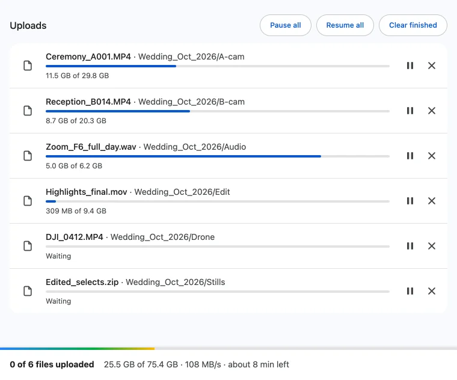
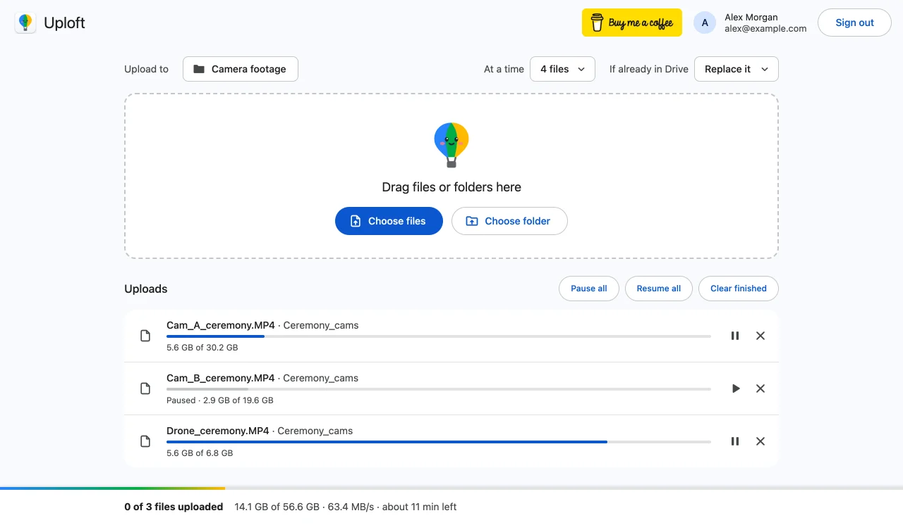

Can you pause and resume a Google Drive upload?
Published · Updated · By Sai Nath
Drive's own upload panel has no pause button that Google documents. Uploft adds one: press the pause icon on a file, or Pause all, and press Resume or Resume all to carry on from the last byte Drive confirmed. Only the piece that was on its way is sent again.
This guide comes from the maker of Uploft, the Chrome extension mentioned below. Google's limits and steps link to Google's own pages and were checked on 29 October 2026; what the extension does comes from its source code.
Does Drive's website have a pause button?
Google's help pages for uploading (Upload files and folders and Get started with Google Drive) describe no way to pause an upload on drive.google.com. The one pause Google does document is in Google Drive for desktop, where "you can pause or resume the sync process ... at any time". That is syncing a folder, not sending one large file from a browser tab.
Pausing matters when a video upload is using all of a slow connection, or when you need the computer for a video call and want the upload back afterwards. Uploft has a pause control for exactly that, in its uploader page.
How to pause and resume uploads
- Click the extension's toolbar icon ▸ Upload files to Drive and start your uploads with Choose files, Choose folder or drag and drop.
- To stop one file, press the pause icon at the right of its row. The row reads "Paused" with how much is already in Drive, for example "Paused · 73.6 MB of 180 MB".
- To stop everything, press Pause all above the list.
- To carry on, press the play icon on the row (Resume) or Resume all. The files rejoin the line and start again within the "At a time" limit you chose.


What do Pause all and Resume all do?
Pause all pauses every upload that is waiting or running. A file in the middle of a piece stops that piece; a file that is waiting simply stays put. Nothing is deleted from Drive and nothing is cancelled.
Resume all puts every paused file back in the line. Each one asks Drive how many bytes it already holds and continues from the next one, so the work already done is kept. What is sent again is at most the piece that was in flight when you paused: pieces start at 8 MiB and grow to 64 MiB on fast connections. Drive keeps the session for about a week, as Google's upload guide says ("A resumable session URI expires after one week").
While nothing is uploading, the extension stops asking Chrome to keep the computer awake, so a paused list does not hold the computer up. The page also stops asking before you close the tab, because nothing is running.
What survives a restart?
The list and each file's place in Drive. The queue is saved in the browser's own storage, so after Chrome restarts, the uploader shows those files as "Interrupted at" a size, with a banner. Press Resume in the banner, or choose the same files again, and each continues from the byte Drive confirmed. The details are in how to resume a Google Drive upload.
Keep a pause under a week. After that Drive has dropped the session and the file starts again from zero.
How do I clear finished or stuck items?
- Clear finished removes uploaded, skipped, cancelled and failed rows from the list. Running and paused uploads stay. It only tidies the list: the files in Drive are not touched.
- A failed row has Retry and Remove. Retry starts it again with a fresh count of attempts.
- The close icon on a running or paused row cancels that upload and asks Drive to discard its session.
- An interrupted row has Forget this upload, which drops it from the saved queue.
If an upload stops by itself instead of being paused, see why Google Drive uploads keep stopping and what "waiting for the network" means.
What are the limits?
- The pause controls are in the uploader page. They do not pause an upload you started on drive.google.com.
- The uploader has to stay in Chrome (open or restored) for uploads to run; it does not upload in the background once its tab is closed.
- A paused file must be unchanged to continue: a different size or modified time makes it a new upload.
- It runs in Chrome 116 or later on a computer, and it is not on the Chrome Web Store yet.
Uploft is free, and its source code is public. It isn't on the Chrome Web Store yet; the home page shows what it does and what it asks for.
Sources
Checked on 29 October 2026.
- Google Drive Help: Upload files and folders and Get started with Google Drive.
- Google Drive Help: Use Google Drive for desktop (pausing sync).
- Google for Developers: Upload file data (resumable uploads, one-week session).
- Uploft: source code (upload engine and uploader page) and privacy policy.